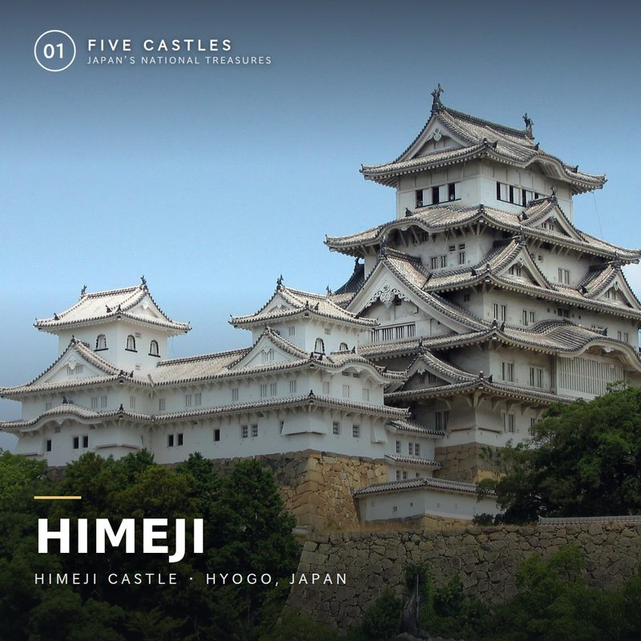
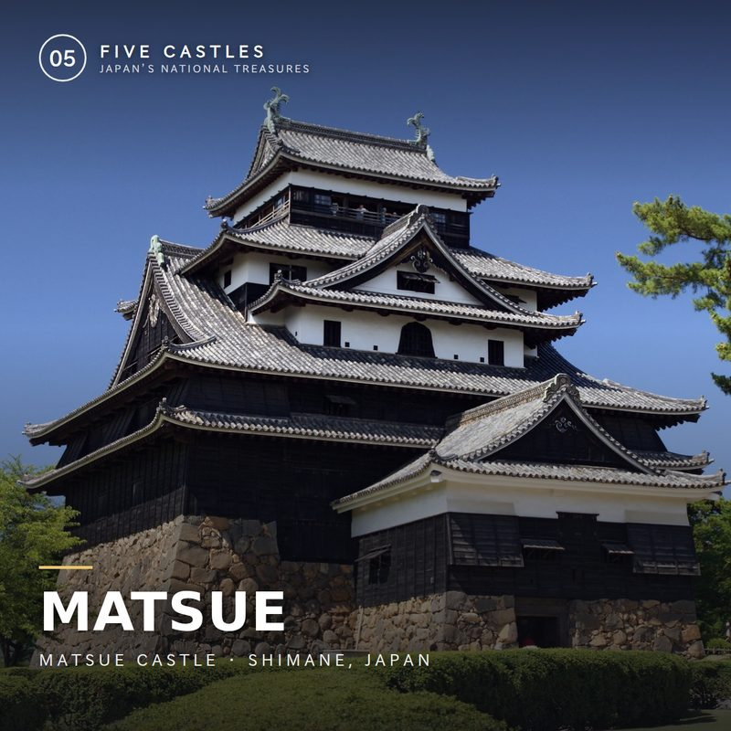
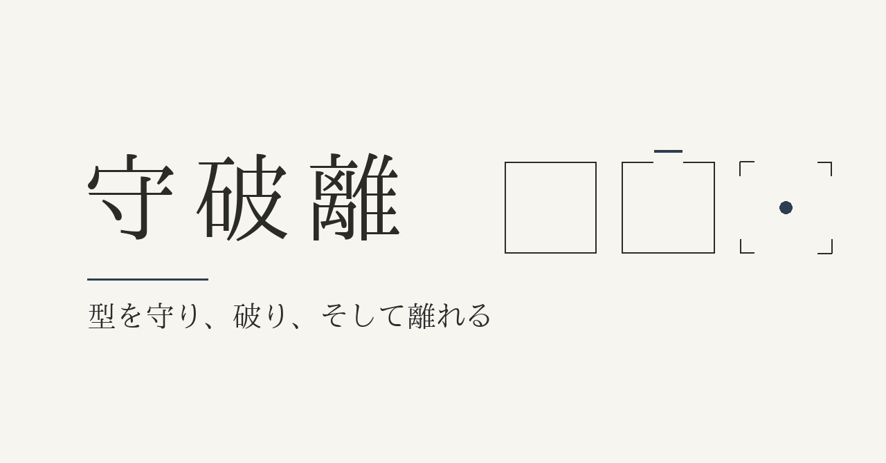
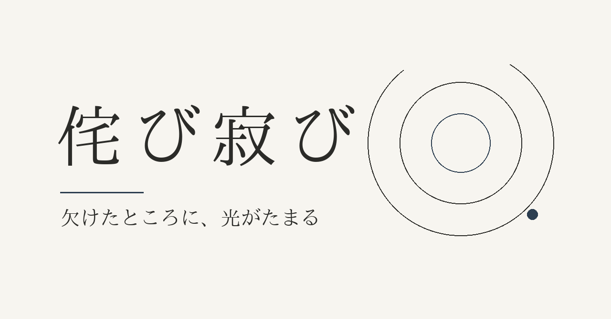
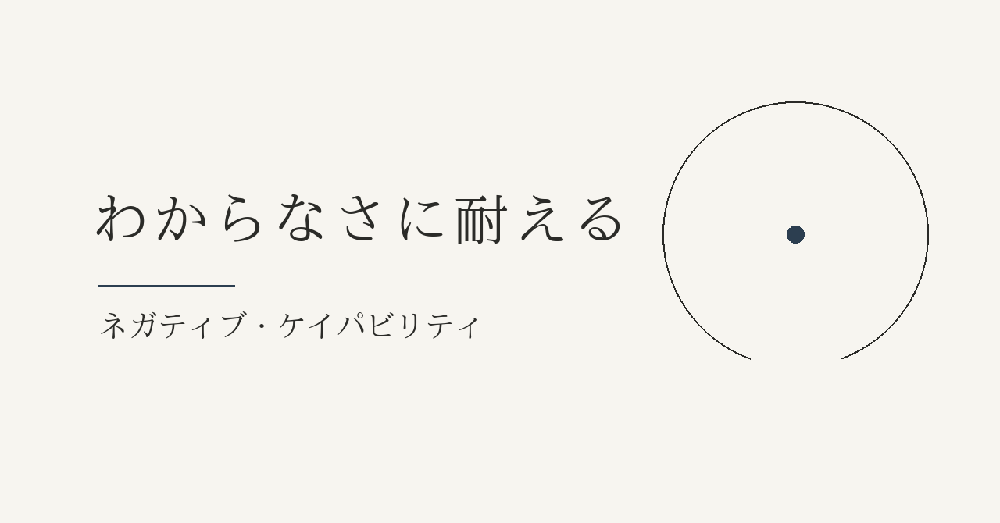

禅 — Zen
ZENKYU
Practical Zen for Ordinary Days
Short, concrete practices drawn from Japanese Zen — for people who will never sit a retreat. No incense. No belief required.
What is ZENKYU?
ZENKYU takes ideas from Japanese Zen and turns them into things you can actually do this week. No belief required, nothing to join — just practices, borrowed respectfully and used honestly.
It's written by one person taking these ideas out of the monastery and into ordinary weekdays — imperfectly, like everyone else who tries.
Mindfulness
Drawn from Zen practice — presence, breath, and quiet attention brought into everyday life.
Minimalism
Fewer, better things. Japanese simplicity applied to space, schedule, and mind.
Modern Productivity
A 25-minute focus rule and an evening shutdown ritual — discipline you can actually keep.
Latest Essays
Free essays on Zen, mindfulness, and simple living — published on Medium.
You Will Never Be in This Exact Room Again
The Zen phrase ichigo ichie (一期一会) — and why treating this moment as unrepeatable changes how you spend it.
Read on Medium →Your Like Count Is a Flower in a Mirror
The Zen phrase kyōka suigetsu (鏡花水月) applied to something very modern: watching a number instead of living a moment.
Read on Medium →The Doorway Where You Take Off Your Shoes
Genkan (玄関) literally means "gate to the profound." What a small daily threshold ritual can do for the rest of your day.
Read on Medium →"Put It Down" — Even When I'm Carrying Nothing
The Zen word hōgejaku (放下著) and the strange discovery that you can keep holding on to something long after you've let it go.
Read on Medium →The 5 Minutes Before You Check Your Phone
They decide more of your day than you think. A small, concrete change to how you start the morning.
Read on Medium →Why a Cluttered Desktop Is Quietly Draining Your Focus
The Japanese instinct for a clear surface, applied to the screen you actually look at all day.
Read on Medium →Free Resources
Four things to start with, no email or purchase required.
Zen for Modern Life
A five-page starter guide: what Zen actually is, and four practices to try today.
Download PDF →{kind=link}
{kind=link}
Shop
The ZENKYU shop lives on Ko-fi — digital guides, membership, and support, all in one place.

Himeji Castle Guide
An 11-page PDF guide to Himeji Castle — its history, how to read the architecture, a walking route, access and the seasons.
Get it on Ko-fi →Inuyama Castle Guide
A 12-page PDF guide to Inuyama Castle — the oldest-style keep of the five, its history, architecture, a walking route and access.
Get it on Ko-fi →
Matsue Castle Guide
A 12-page PDF guide to Matsue Castle — the only donjon with a well inside, its history, architecture, a walking route and access.
Get it on Ko-fi →Support ZENKYU
ZENKYU is free to read. If it's useful to you, you can support its growth on Ko-fi.
日本語で読む
ZENKYUの記事は note でも日本語で公開しています。

オリジナルは、どこから来るのか ── 守破離という道すじ
型を守り、型を破り、型から離れる──守破離という三段階の学び方。
noteで読む →
完璧じゃないまま、出す ── 侘び寂びという時間の味方
「もう少し整えてから」を手放すための、侘び寂びという美意識。
noteで読む →
わからなさに、留まる ── 答えの出ない事態に耐える
答えを急がず、わからないままに留まる技術、ネガティブ・ケイパビリティ。
noteで読む →